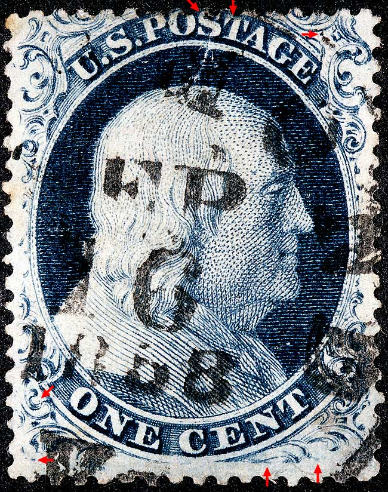
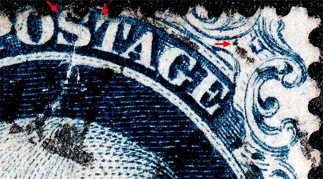
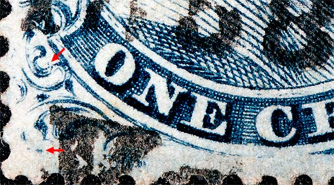
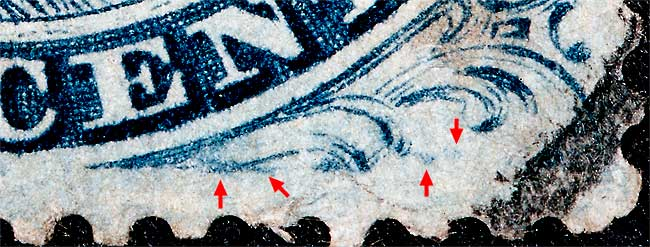
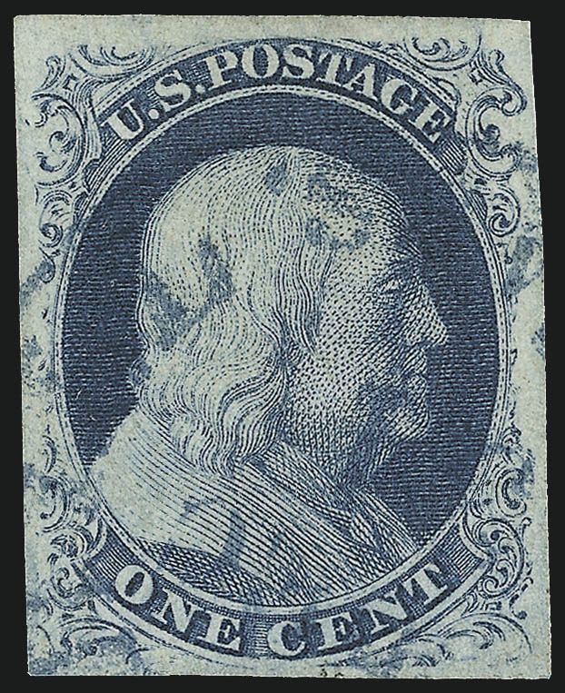

1¢ Franklin Issue of 1851-1857, PLATE 4 Position 36L4 |
Type III, Relief D Issued both imperforate (Scott 8) and perforated (Scott 21). |
|  |
| Figure 1. (BELOW) Plating marks in the S and T of POST and heavy dot below and to the right of Ornament Y, partially obscured by cancellation ink. See FIGURE 4, below for better view.
 |
| Figure 2. (BELOW) A small dot of color inside of Ornament H as illustrated in the plating diagram. Additionally there is a dash of color in the left plume. See FIGURE 4, farther below for confirming detail.
 |
| Figure 3. (BELOW) Blurs of color in the lower right scroll and below the small lower right unnamed plume as illustrated in the plating Neinken plating diagram.
 |
| Figure 4. (BELOW) A lower resolution image of Postion 36L4 from the Robert A. Siegel Auction Gallery Sale 963 Lot 178. Key plating marks are the strong dot underneath and slighty east of Ornament Y per the Neinken mat, and the little dot of color inside Ornament H. The very short ornament A is another helpful plating feature, as is the blur at the bottom of the lower right scroll.  |
DISCLAIMER and COPYRIGHT INFORMATION: Thanks for visiting this site. I hope you learn something new as we are making new discoveries all the time. You, the visitor, have my permission to link to my pages and to share the INFORMATION with others. The images themselves fall under the fair use guidelines established by the United States Congress and Copyright law. Basically contact us before using. I also ask in return that you send me an e-mail if I have made a mistake, or have made some other technical blunder that in my rush to put these pages up would cause the visitor confusion. Please also visit my other website at www.slingshotvenus.com. and support the live music arts. While your there, be sure to purchase our music. There are not many philatelic rock stars around and we need all the help we can get. :-) I can be reached at: nerdman@ix.netcom.com |